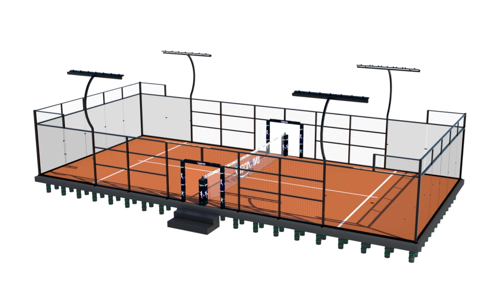

01
Avoid permanent civil works
The client wanted a professional playing environment without committing to a conventional permanent concrete-foundation build.
A private-property installation in Harwich used a self-supporting portable court concept to reduce permanent civil work and preserve future relocation flexibility.
Company Project Reference · Project facts cross-checked against the existing archive
The project brief prioritised a full-size court, limited permanent groundworks and the option to dismantle or relocate the system later.
| Location | Harwich, Essex, United Kingdom |
| Venue Type | Private property / residential setting |
| Court Type | Portable full-size padel court |
| Foundation Strategy | Self-supporting portable base rather than traditional permanent concrete foundation |
| Relocation | Court designed to be dismantled and moved |
| Outdoor Context | Damp, temperate UK climate |
The client wanted a professional playing environment without committing to a conventional permanent concrete-foundation build.
The court needed to support future dismantling and relocation if the property layout or ownership changed.
Moisture, seasonal weather and year-round exposure required attention to steel protection and drainage.
The source project records a full-size competition-standard portable court selected for the private property.
The portable-base concept uses independent structural support rather than relying on a conventional permanent slab.
The archive describes hot-dip galvanized and coated steel components for damp outdoor conditions.
The project record documents professional handling of glass, assembly and court installation on site.
The Harwich project is verified in the company archive. These local SPORTENVO images illustrate the portable / modular system; they are not presented as Harwich site photography.


Ground capacity, levels, drainage and local requirements still need review even when permanent concrete work is reduced.
Dismantling, component condition, packing and the future receiving site all affect whether relocation is practical.
Confirm what is supplied, what local works remain, and whether permissions or structural checks are required in the project jurisdiction.
Send the country, court count, venue type, dimensions and target opening date.